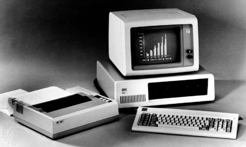
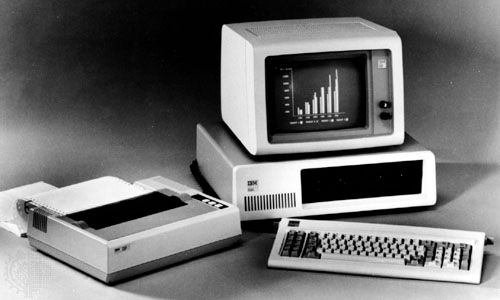
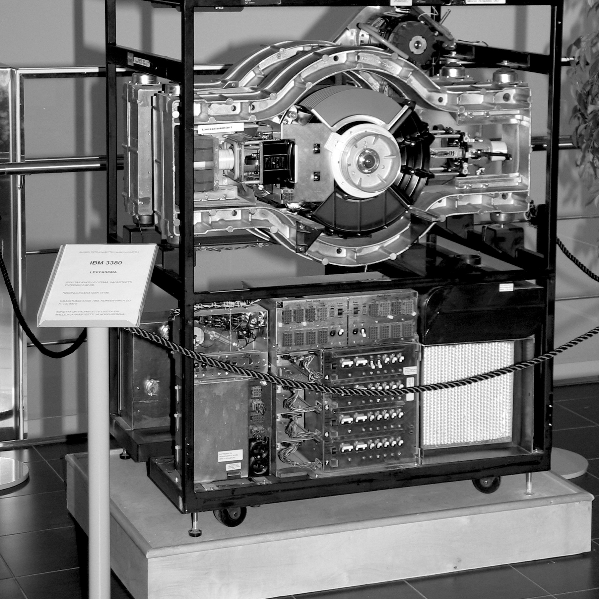

History of the Computer
In The Beginning ...
The history of computers starts out about 2000 years ago, with the birth of the abacus. When the beads on the abacus are moved around, according to programming rules memorized by the user, all regular arithmetic problems can be done. In 1671, Gottfried Wilhelm von Leibniz invented a computer that was built in 1694. It could add, and, after changing some things around, multiply. About a century later Thomas of Colmar created the first successful mechanical calculator that could add, subtract, multiply, and divide.
Other Memorable Events ...
- In 1812, Babbage realized that many long calculations were really a series of predictable actions that were constantly repeated. He began to design an automatic mechanical calculating machine, which he called a difference engine.
- Herman Hollerith and James Powers made a step towards automated computing with the development of punched cards. Reading errors were reduced dramatically, workflow increased, and stacks of punched cards could be used as memory of almost unlimited size. For more than 50 years, punched card machines did most of the world's first business computing.
- The start of World War II produced a large need for computer capacity. In 1942, John P. Eckert and John W. Mauchly decided to build a high - speed electronic computer to do the job. Known as ENIAC, this machine could multiply two numbers at a rate of 300 per second.
- Early in the 50 's two important engineering discoveries changed the image of the computer field - Magnetic Core Memory and Transistor - Circuit Elements. These technical discoveries quickly found their way into computers. Such computers were mostly found in large computer centers operated by industry, government, and private laboratories.
- In the 1960 's, efforts to design and develop the fastest possible computer with the greatest capacity reached a turning point with Stretch computer by IBM. Stretch was made with the fastest access time, and total capacity in the vicinity of 100,000,000 words.
- Many companies, some new to the computer field, introduced programmable minicomputers supplied with software packages in the 1970 's. The "shrinking" trend continued with the introduction of personal computers (PC's), which are programmable machines small enough and inexpensive enough to be purchased and used by individuals. Many companies, such as Apple Computer and Radio Shack introduced very successful PCs in the 1970 's.
- By the late 1980 's, some personal computers were run by microprocessors that, handling 32 bits of data at a time, could process about 4,000,000 instructions per second.
- Computer networking, e-mail and the Internet, and electronic publishing are just a few of the applications that have grown in recent years. Computers continue to decrease in price, offering the promise that soon, “computers will reside in most homes, offices, and schools”.

 

Great Computer Quotes ...
“Men are from Mars, Women are from Venus, Computers are from
Hell.”
~Author Unknown
“Give a person a fish and you feed them for a day;
teach that person to use the Internet and they won't bother you
for weeks.”
~Author Unknown
“To err is human, but to really foul things up requires a
computer.”
~Farmer's Almanac, 1972
Test Your Computer Knowledge ...
Before the modern day computers we have now came a lot of firsts. Test your knowledge and learn about some key inventions that led to the technology we use today.
HINT! This is what the first gigabyte drive looked like...
Q: What was the first computer mouse made of?
- Plastic
- Metal
- Wood
- Rubber
Answer
It was made from wood! The first computer mouse was invented by Doug Engelbart in 1964.
Q: How much did the first gigabyte drive weigh?
- 550 lbs
- 1000 lbs
- 250 lbs
- 700 lbs
Answer
550 lbs! This hefty gigabyte also came with a hefty price tag, costing $40,000 when released in the 1980 's.
Q: How much square footage did the ENIAC take up?
- 2500
- 1800
- 2000
- 1500
Answer
1800! Additionally, this big machine weighed over 27 tons.
I used multiple new features in this QAP, which allowed my images in the other memorable events section to move when hovered over. I created an imagecontainer div. In the div I added justify-content:space-between (which evenly distributed space between the images) and display:flex(which allowed a flexible layout). I then added an imagecontainer img and imaginecontainer img:hover. Within those I added a transition: (which defined the transition effect for transform and box shadow), transform: (which scaled up the image when hovered over) and box shadow: (which added a shadow affect when hovered over).